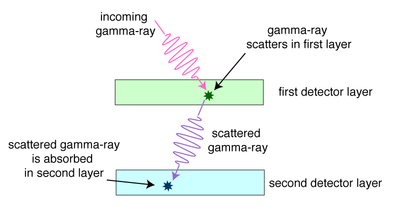
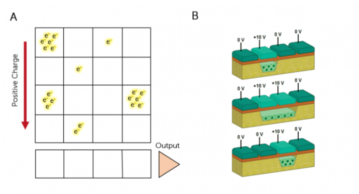

A mission to study gamma and X-rays
This mission will focus on the goal of exploring the photonic high-energy Universe, that is the observation of gamma-ray and X-ray radiation.
Mission Objectives
The main objectives of this mission are to fill in the future observational gap between 1-10,000 MeV, to serve as an high-energy transient monitor telescope, and to provide unprecendented gamma-ray angular resolution with intensity interferometry.
Gamma-Ray Detector
A wide-field camera surveys gamma-ray sources with less stringent pointing requirements, detecting high-energy radiation emitted by astrophysical objects.
X-ray Detector
The satellite’s X-ray detector uses Charged-Coupled Devices (CCDs) for precise photon detection and analysis. With a pointing accuracy of 5’’ and 0.5’’ in right ascension (RA) and declination (DEC), the instrument provides high-resolution observations. CCDs convert incoming X-ray photons into photoelectrons, which are shifted to a readout register, creating a digital signal. When X-ray photons interact with the CCD, they lose energy through Compton scattering, fluorescence, or the photoelectric effect, generating electron-hole pairs in the silicon substrate. Using the ionization energy of silicon (3.65 eV), the photon’s energy can be estimated.
Functioning as a photon counter, the detector counts individual photons, typically ensuring each photon is collected within a single pixel. In cases where photons interact with multiple pixels, an intensity threshold distinguishes single-pixel from multi-pixel events. This method, combined with a grading system similar to the ASCA mission, helps separate X-ray events from cosmic rays, ensuring accurate detection and analysis of X-ray sources. This instrument will contribute significantly to the study of high-energy astronomical phenomena through detailed X-ray observations.
| Orbit | Highly eliptical for main satellite |
| Altitude | 10,000-50,000 km |
| LTAN | midnight (maximize night time) |
* these are preliminary parameters